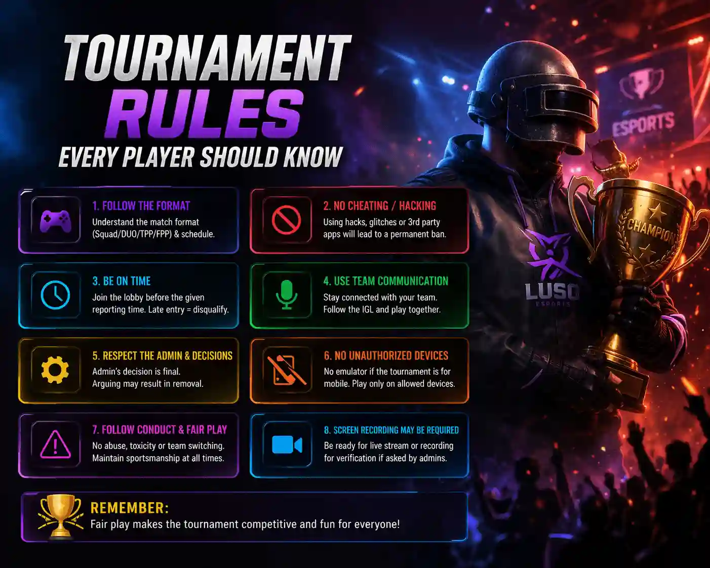

Published: April 2026

Esports tournaments are becoming increasingly popular, especially in games like BGMI. Every day, thousands of players participate in online and offline competitions to win prizes, gain recognition, and build their gaming careers. However, many players ignore one of the most important aspects of competitive gaming—tournament rules.
Understanding tournament rules is not just important for avoiding penalties, but it also helps you play professionally and respectfully. Many players get disqualified not because of poor performance, but because they fail to follow simple rules. In this guide, we will cover all the important tournament rules that every player should know before participating.
One of the most basic yet important rules in any tournament is punctuality. Tournament organizers set specific match timings, and all players are expected to join the room before the deadline. Late entry can lead to disqualification or replacement by another player.
To avoid this, always stay ready at least 10–15 minutes before the match starts. Keep your game updated, internet stable, and device fully charged. Being punctual shows professionalism and respect towards organizers and other players.
Sharing room ID and password with unauthorized players is strictly prohibited in most tournaments. This can lead to unfair advantages and disrupt the competition.
If a player is found sharing private room details, they may face immediate disqualification or even a permanent ban from future tournaments. Always keep match details confidential and only share them with your registered teammates.
Using hacks, cheats, or any third-party tools is one of the biggest violations in esports. This includes aimbots, wallhacks, ESP, and any modified game files.
Tournament organizers and game developers have strict anti-cheat systems. If you are caught using any unfair means, your account can be permanently banned. Always play fair and rely on your skills.
Some tournaments allow only mobile players, while others may allow emulator players. It is important to check whether emulators are allowed before joining.
Using an emulator in a mobile-only tournament can lead to instant disqualification. Always read the tournament guidelines carefully to avoid such mistakes.
Toxic behavior, abusive language, or disrespect towards other players and organizers is not tolerated. Esports is not just about skills—it is also about sportsmanship.
Maintaining a positive attitude helps you build a good reputation in the community. Players who behave professionally are more likely to get opportunities in the future.
Teaming with enemy players to gain an unfair advantage is strictly prohibited. This is considered cheating and can result in a permanent ban.
Always play fair and compete honestly. Esports is about skill, not shortcuts.
Every tournament has its own scoring system, including points for kills and placement. Understanding the format helps you plan your gameplay better.
For example, some tournaments reward survival more than kills, while others focus on aggression. Knowing this in advance can improve your strategy and performance.
Internet issues are one of the most common problems in online tournaments. While some organizers may allow rejoining, most do not take responsibility for connectivity issues.
Make sure you have a stable and fast internet connection before joining a match. Avoid using public Wi-Fi and try to play on a reliable network.
Leaving a match before it ends can affect your team’s performance and may lead to penalties. Even if your teammates are eliminated, you should continue playing until the match is over.
This shows commitment and respect for the competition.
Different tournaments may have different rules. Never assume that all tournaments follow the same format. Always read the rulebook provided by the organizers.
Spending a few minutes reading the rules can save you from disqualification and help you perform better.
Tournament rules are the foundation of fair and competitive gameplay. Ignoring them can lead to penalties, disqualification, or even permanent bans. On the other hand, following rules helps you build a strong reputation and grow in esports.
If you want to succeed in competitive gaming, focus not only on your skills but also on discipline and professionalism. Always respect the rules, play fair, and give your best performance in every match.